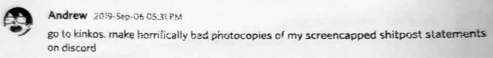

Discord Messages from Andrew Hussie
These Discord messages were originally part of an 18-page paper zine entitled Discord Messages I Have Received From Andrew Hussie, sent by an associate of his between July and September 2019.
Always meant to be read by fans, these are now available to an international and diverse public for their perusal. Enjoy Andrew Hussie's musings on canonicity, fan communication, Homestuck and Air Bud.
This mirror keeps presentation virtually intact, besides reordering some posts that weren't in chronological order, and adding visual breaks between A4 pages. The original scans looked like this:

Introduction
i just mean at any point you can take my unbelievably hot shit, print it out, and start circulating underground zines
go to kinkos. make horrifically bad photocopies of my screencapped shitpost statements on discord
i once made a zine via kinkos as a teen. i miss those times
really felt like i was doing something quite subversive
it was this completely insane, like actually incomprehensible thing
it included a few comics, one was a cyberpunk type comic about mr. T which i made
the rest was... I don't even know. like ripped out bits of magazines to make almost ransom note-style graphics, resulting in ludicrous articles about, like, nothing?
then we (me and my cousins) drove around the city trying to put it in stores, like inside storefront windows and such
and most people just kicked us out
i learned some things about society i guess
most businesses do not cotton to this. like literally just fucking banks and shit we would walk into with great aplomb, and begin positioning our literature as if mandated by the president to do so
it didnt really fly
but on the other hand, the dude at kinkos gave us all the copies for free, because he wanted to "encourage stuff like this"
to be honest, we didnt even try much very hard, or intelligently
because we all knew it was fucking trash
we just tried whatever, until we ran out, and went home
July
but actually lets not. lets be fucking normal. can we be normal for once??
Lets Make Normal Shit
clapping emojis
there is no bottom to dirk
yeah, its time to fuck me up
see, paradox space getting shattered and sucked into the hole... thats actually me getting owned
my vicegrip on all this shit is broken now
all of it is. just a perpetual and highly disgraceful ourobourotic self dunk, times infinity
its all grotesquely psychologically incestuous
thats why theres so much incest in hs i guess
sorry kids
that was all sort of the point
existing in some sort of uncanny incest space
i came up with a reasonable method of dealing with the tension between all these forces, and im fairly satisfied with it to date
which is to say nothing, ever
people just need the better part of a decade to get over themselves and finally appreciate good shit
like nobody thinks vriska is "controversial" anymore
she won
i bet the same thing will happen with the epilogue
the epilogue is just a vriska, in story form
sometimes my ideas are so good i can barely stand it
and, yeah. edging the reader is just part of the shit
im a dark prophet and know much more about our evil society than anyone wants to admit
yeah im working on it
i mean, not really
but in my IMAGINATION i am
always thinking about clowns. thats the fucking future
nah im too old for that
for me, now its build a clown school, or nothing
yeah i might be in my clown prime actually
mostly im just fucking lazy
some clowns are sad, im a lazy clown. too lazy paint up and spread the good word
we like to celebrate LIFE,
and love
and combat
also............?
philosophy
ive been trying to make some recent effort toward the intellectual advancement of these clown ambitions
my latest thinking is that maybe it makes the most sense if the endeavor revolves around some sort of charitable cause
because at some point, one really has to ask. why the fuck are you trying to release more clowns into the world? is this actually responsible?
so you can either take your radioactive clowns and bury them in the earth under miles of concrete
OR
you can turn their radioactive properties into a force of good and change
sometimes radiation results in positive mutations
we want a bunch of fuckups at a cheap soviet facility to mishandle clown safety procedures, resulting in a massive, highly comical meltdown
ok, maybe that goal is too literal
i dont "actively" rap. insofar as i dont think i have ever spoken a real rap out loud in my life
but ive written plenty of lyrics
ive basically done a huge amount of work already, and somewhat illogically, conceptually tying juggalos to weed
420 is weed day, but its also clown day
fairly striderian
not to make everything about homestuck
except that everything actually is about homestuck
so whatever
also it will be assisted by the knowledge that cancellation isnt even quite real
if left to my own devices i will just never, ever stop thinking of ways to torment and shit on jake english
hes just tavros 2.0
this is probably going to result in some chaotic discussions
GUYS, THIS IS FUCKED UP. WE JUST HAD TO PUT OUR UNIVERSE INTO HOSPICE CARE
maybe this is why communism fucking sucks actually. it all sounds good, but then they have to do shit, and all they do is right callout posts about eachother
same as it ever was
i think its probably just a universal constant that left wing personalities are just complete and total disaster people, and we need to make peace with that
see, this is why the left needs a massive clown movement to put wind in its sails
so that we can lionize literal clowns
as a huge dunk on the right
theres been an idea coalescing in young fandom which has been kind of difficult to deal with while still trying to make fictional content. which seems to be "the moral values of childrens media" should be conflated with "the moral values of any given piece of media"
when a critical mass of young people start really believing and enforcing that, it gets kind of tough to keep making challenging things
which is kind of unfortunate, because making challenging stuff is the only way to make impactful statements about the important topics which they say they hold dear
August
one of my operating theories is if you take something by the creator, which carries that authentic canon energy, and then infuse it with energy/ideas that come more from the wavelength of fan enthusiasm, then it seems likely that fans will pickup on that wavelength too and enjoy the results
maybe they can make a zine for conservative homestucks
i knew it. i knew HS turned everyone gay, and/or destroyed gender
also non-cis spreads are pretty lopsided
i think the straights just have a weak farm system
the farm system is called "gender"
im just a more nuanced politician than that
a gentle philosopher king, if you will
please clap
prefaced i guess by some sort of statement like, andrews philosophy is that making "posts online" is for basic bitches, and true visionaries only communicate through an unfathomable pattern of performance art and loosely coordinated spokespeople
yeah. i think it can be interesting to play with official dispatches of info, ways to disseminate messages from a creator, almost as much as playing with the media in question
ill probably consider more methods like that
such as putting 20 toblerones in a box, near a cave
even though my thing was 2500 words, its still relatively brief compared to what could be said in a clarifying way. but i kinda think you just cant say too much at once sometimes, or the message disappears
but i think there are more points to be made about like, "authoritativity" when it comes to how fans perceive some works of fiction as more legitimate than others, and how there are a lot of illusions about that which can be poked at
people whove been writing works for marvel characters for the last several decades literally have been writing fanfiction. theres literally nothing to distinguish what they are doing from fanfiction, except a big corporation (run by people who also had nothing to do with these characters) is saying "this is more legitimate than anything you are doing out there"
which is sort of insane, that a corporation has a magic wand to tell you what forms of art are more important than others
everyone is so powerfully brainwashed by capitalism. even these passionate anti-capitalist folks
they talk a good game about how disney sucks or whatever, but then turn around and start talking about media in this very formalist way that implies they agree with corporations defining the legitimacy of whats real vs fake
even WP is a corporation. its just a very small one. the fact that WP has the good and real shit, whereas you do not, is a psychological thing, not a reality
also i only post online for the specific purpose of granting wishes
i suddenly liked fostering the idea that these magic toblerones gave certain intrepid fans some true agency, per some wonka stunt
toblerones are like these magic golden triangle bars that contain pure hope energy
yeah theyre pretty good
although really my "obsession" with them is just a long running gag more than anything
and now i have decided to imbue them with this magic energy quite suddenly
i get to just do that
say something is magic. then its true
one thing i always wanted to do was like, if i make a "good female character" or a "good gay character" is to make sure im making them total train wreck people just like all the cool cishet men characters get to be
which i think also includes narratives that focus on that stuff, and read by those people. dont be afraid to nosedive into the sewer sometimes, otherwise youre just treating all that material with kid gloves too much
i always felt like whenever i did crazy or sorta bad shit, it carried an implied message of "i know what im doing here, i can take a punch, and the message that i can take a punch almost becomes sort of the point of doing it weirdly"
but also this is a luxury i had as a solo artist
not to mention being insulated by privilege
but others may find it harder going forward
the problem is people involved are definitely going to get attacked, almost no matter what
and there just needs to be a willingness to build up some armor... or not even armor. its more like being at peace with very negative views about yourself
i have thought about this much, this topic of over many years, which is something like "why do i do bad shit sometimes when i know its bad, and i know ill get destroyed for it"
and i think the most constructive answer is that its was always partially an exercise in disarming my own fragility
which, i think has a lot of value if you actually want to be honest in confronting dark topics, within yourself and otherwise
but, if youre too scared or anxious you kinda cant do that. you can never go hard enough in art to create those revelatory experiences for yourself
but for me personally at lease, looking back on everything, i think there was a lot of value in doing all this shit which essentially worked to tear down my ego a bit, and other barriers which prevent you from being fully honest about the stuff you make
like theres this idea you can work hard to cultivate with your work, and that is going all out on making sure everything thinks youre a super duper good person
its a really tense line to walk, kind of unnatural, and at the end it can kind of all blow up in your face anyway if youve established such a high bar persona
then even tiny misteps can feel like the fucking end of the world
ive been putting so much energy into my clownsona that ive been horribly neglecting my fursona
i think that would be the obvious thing people would expect
there would be nothing wrong with a horsona per se
something about the energy of actually BEING a horse feel intimidating to me though
its like, a fucking lot
i would have to spend time ruminating on what makes me feel free inside
maybe go on a spiritual journey
ah shit. here we go again (walking back toward toblerone cave)
people now leaving notes of prayer to june egbert at the holy pilgrimage site
i knew it would start catching on as a place of spiritual journey
this is what i wanted
its like, air bud
"theres no rule that says jack nicholson cant play basketball"
hmm
vriska shit
just a vriska catastrophe, in automotive form
sollux comes from a long and proud heritage of gamers
September
mspa has always been famous for "weird puzzle shit", but the real gamers know the dark horse contender has always been "weird gender shit"
PS characters are a bit like mspa reader
person-like people
little dressup dolls who perform accordingly
caliborns male performance is 100% informed by just observing humans and their gender culture
daves transformation into the berniecore, poli-turbonerd is really one of the best turns his character could have taken
gotta hand it to myself for that one
my take on that would be that jake is actually HARDER to read because of his totally indiscriminate tastes
when youre about everything, youre about nothing
or at least, youre making yourself out to be
in a sense, its another method of obfuscation he uses
go run that hot shit by the englishistas out there. theyll eat it up
Epilogue
when seinfeld dies, that it, im packing it in
just, walking off into the woods. youll never hear from me again